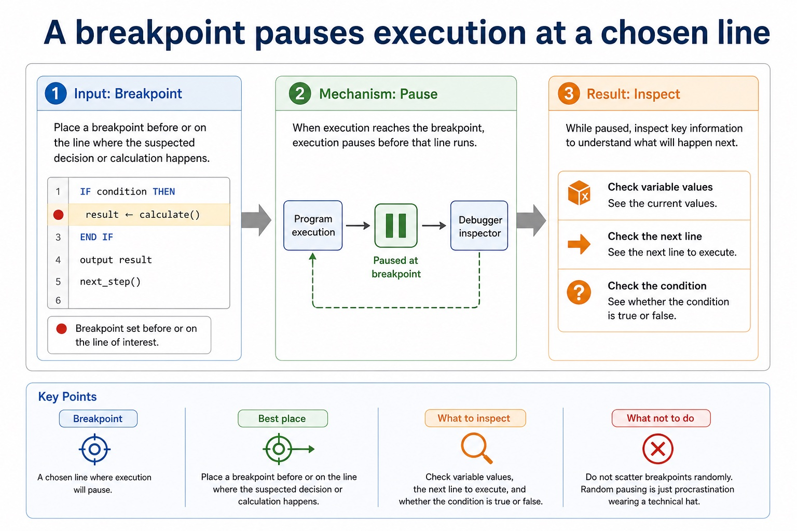

IDE features: context-sensitive prompts, dynamic syntax checking, prettyprint, expand/collapse, single-step, breakpoints, variable/expression inspection and report window
Visual overview
A breakpoint pauses execution at a chosen line

Visual transcript
- Breakpoint
- Best place
- Place a breakpoint before or on the line where the suspected decision or calculation happens.
- What to inspect
- Check variable values, the next line to execute, and whether the condition is true or false.
- What not to do
- Do not scatter breakpoints randomly. Random pausing is just procrastination wearing a technical hat.
Core explanation
Context-sensitive prompts, dynamic syntax checking, prettyprint, expand/collapse, single-step, breakpoints, variable/expression inspection and report window.
For coding, an IDE can provide context-sensitive prompts. For initial error detection it can perform dynamic syntax checks. For presentation it can prettyprint code and expand or collapse code blocks. These features help create and navigate source code but do not prove that its algorithm is correct.
For debugging, an IDE can provide single stepping, breakpoints, inspection of variables and expressions, and a report window for diagnostic or output information. Single stepping executes one statement at a time; a breakpoint pauses at a chosen point; variable/expression inspection exposes changing values.
And debugging with single stepping, breakpoints, variables, expressions and a report window.